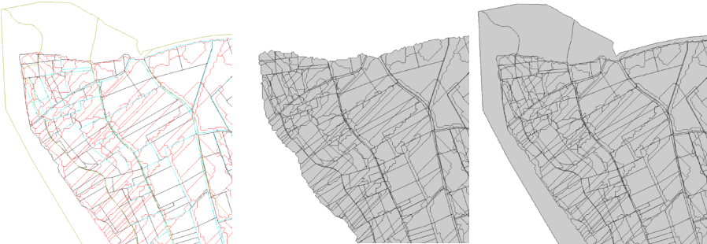

NAME
m.seg - Segmentation Procedure
KEYWORDS
vector, segmentation, overlay, hierarchical order
SYNOPSIS
m.seg
m.seg help
m.seg [-i] input=name[,name,...] output=name [snap=float] ID=string[,string,...] [OUTPUT_ID=string] [--overwrite] [--verbose] [--quiet]
Flags:
- -i
- intersection overlay (default is union overlay)
- --overwrite
- Allow output files to overwrite existing files
- --verbose
- Verbose module output
- --quiet
- Quiet module output
Parameters:
- input=name[,name,...]
- Input vector names (name separated by comma ','; in hierarchical order)
- output=name
- Output vector name
- snap=float
- Snap value in map units; default is 1
- ID=string[,string,...]
- Column Name of the ID for each vector map (name separated by comma ','; in hierarchical order)
- OUTPUT_ID=string
- ID column Name for the output vector; default is 'SELF_ID'
DESCRIPTION
m.seg allows the user to overlay several input layers in order to create
one overlayed layer. The input layers are the landscape objects layers
(reachs, plots, subwatersheds, soil horizons). The output layer is a
combined layer of these inputs, it contains two attribute tables (the
first table contains informations for the areal units and the second
for the linear units). After using m.seg, it is recommended to clean the layer with m.dispolygseg, m.sliverpolygseg scripts.
NOTES
For additional informations concerning the overlay procedure, please read Lagacherie, P. & al, 1996 .
m.seg script is able to overlay more than two vectors (and
with no number limits); polygon and line vectors are accepted (but no
point vectors). Vector topology must be correct to avoid geometry
errors. The user must give a hierarchical order for each vector (See Examples for details)
Using flag -I allows the user to make intersection operation rather than union operation (See Examples to see differences between these operations)
The output vector will be a polygon vector with two attribute tables (two layers in GRASS vocabulary): layer 1 contains the column OUTPUT_ID ( column name to identify each output entity) and, for each input polygon vector, a column named "ID_" with hierarchical number (See Examples for details). Layer 2 contains information from the input line vector: for each input line vector, a column named "ID_" with hierarchical number (See Examples for details).
EXAMPLES
Segmentation procedure
The input vectors are the following in hierarchical order:
- 1- plots (polygon vector) : ID column name: plot_id
- 2- subwatersheds (polygon vector) : ID column name: subw_id
- 3- reachs (line vector) : ID column name: reach_id
- 4- soils (polygon vector) : ID columns name: soil_id
Creating seg1 output vector :
GRASS 6.3.0 :~ > m.seg input=plot,subwatersheds,reachs,soils output=seg1 ID=plot_id,subw_id,reach_id,soil_id OUTPUT_ID=IDENS
GRASS 6.3.0 :~ > db.describe -c table=seg1_1
ncols: 5
nrows: 607
Column 1: cat:INTEGER:11
Column 2: plot_id1:INTEGER:11
Column 3: subw_id2:INTEGER:11
Column 4: sil_id4:INTEGER:11
Column 5: IDENS:INTEGER:11
GRASS 6.3.0 :~ > db.describe -c table=seg1_2
ncols: 2
nrows: 2456
Column 1: cat:INTEGER:11
Column 2: reachs_id3:INTEGER:11
Difference in segmentation procedure with flag -i or without
Creating seg1 output vector with flag -i (intersection operation):
GRASS 6.3.0 :~ > m.seg -i input=plot,subwatersheds,reachs,soils output=seg1 ID=plot_id,subw_id,reach_id,soil_id
GRASS 6.3.0 :~ > m.seg input=plot,subwatersheds,reachs,soils output=seg2 ID=plot_id,subw_id,reach_id,soil_id
|

|
|
Left: input vectors (black: plot boundaries; red: subwatershed boundaries; blue: reachs; brown: soil boundaries) ; Center: output vector seg1 (intersection operation); Right: output seg2 vector (union operation)
|
SEE ALSO
m.colseg, m.extractlineseg, m.dispolygseg, m.sliverpolygseg, m.toporeach, m.toposu
REFERENCES
Lagacherie, P., Moussa, R., Cormary, D., AND Molenat, J. 1996.
Effect of DEM data source and sampling pattern on topographical
parameters and on a topography-based hydrological model. In
"HYDROGIS'96. Application of Geographic Information System in Hydrology
and Water Resources Management" (K. Kovar and H. P. Nachtnebel, eds.),
pp. 191-200. IAHS, Vienna.
AUTHORS
Michael Rabotin, UMR LISAH, Montpellier, France
rabotin@supagro.inra.fr
Last Changed: 21 July 2010
Main index
Copyright UMR LISAH OpenFluid